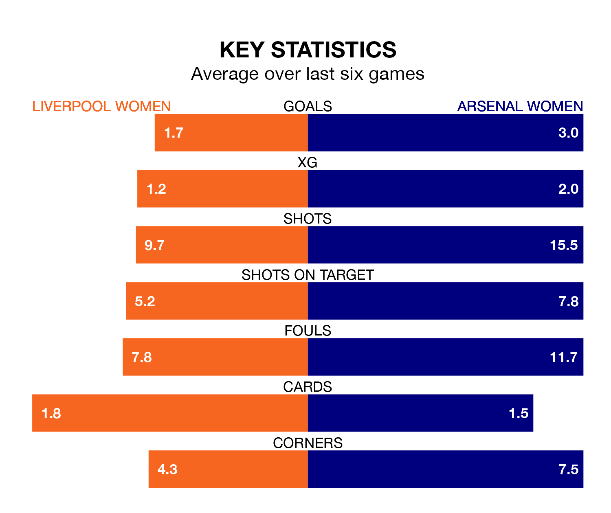

Arsenal Women are strong favourites to take all three points despite Liverpool Women's home advantage in Sunday's match at Prenton Park.
*Betting Company* are offering odds of 1.25 on Arsenal sealing the win, with the visitors sitting third in FA Women's Super League table.
Liverpool, who are fifth in the league and seven points behind the Gunners, are priced at 8.05 to win. A draw is set at 5.1.
With 26 goals in 11 games so far this season, Arsenal are the league's joint-third-highest scorers with 2.4 goals per game. And they are conceding fewer than average, letting in 11 goals at a rate of 1.0 per game.
Liverpool, meanwhile, are below average scorers, with 1.5 goals per game, compared to a league average of 1.7. They have also conceded 1.5 goals per game.
In the last 10 years, Liverpool and Arsenal have played each other on 17 occasions. Liverpool won three of them, Arsenal 12, and they drew twice.
On average, Liverpool scored 1.1 goals and the Gunners 2.6 in those matches.
Their last meeting was on October 1, when Liverpool won 1-0 away.
With Rachael Laws between the sticks, the hosts can rely on one of the league's safest pair of hands. She has kept two clean sheets in her seven appearances this season, and only two other 'keepers – Manchester United Women's Mary Earps and Manchester City Women's Khiara Keating – have been able to prevent the opposition scoring on more occasions in FA Women's Super League.
In the Gunners's net, Manuela Zinsberger also has two clean sheets in 10 games.
Liverpool are in mixed form in FA Women's Super League, with two wins and two draws from their last six games.
With five wins and one loss over that period, the away side's form is much better – they have taken 15 points from 18, compared to Liverpool's eight.
Liverpool's last match was on January 21, a 5-1 loss against Manchester City Women, with Taylor Hinds getting the goal for Liverpool.
Arsenal beat Everton Women 2-1 last time out, on January 20, with Bethany Mead and Caitlin Foord on the scoresheet.
Updated: 09:18 (UTC), 23/01/24